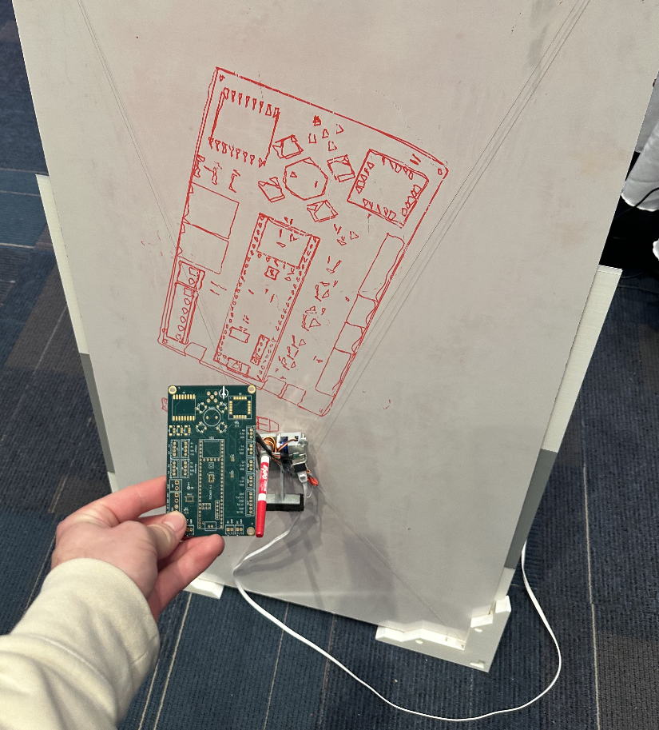
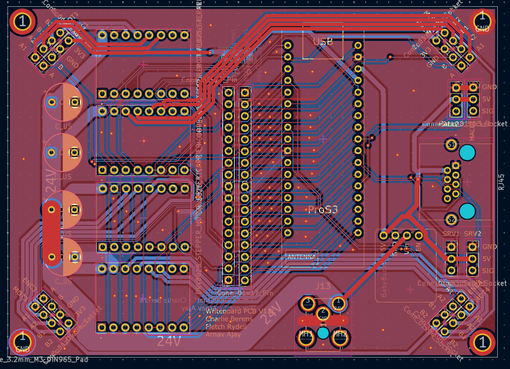
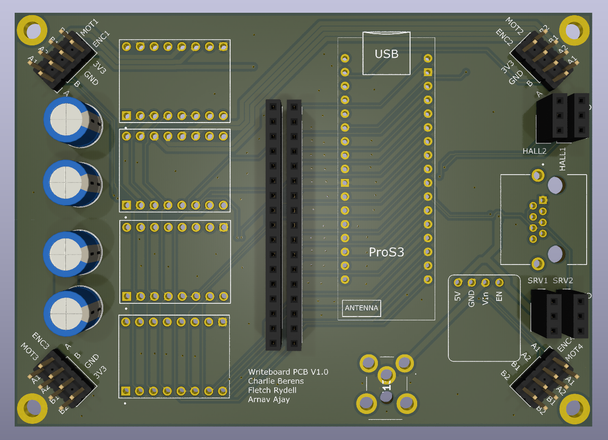
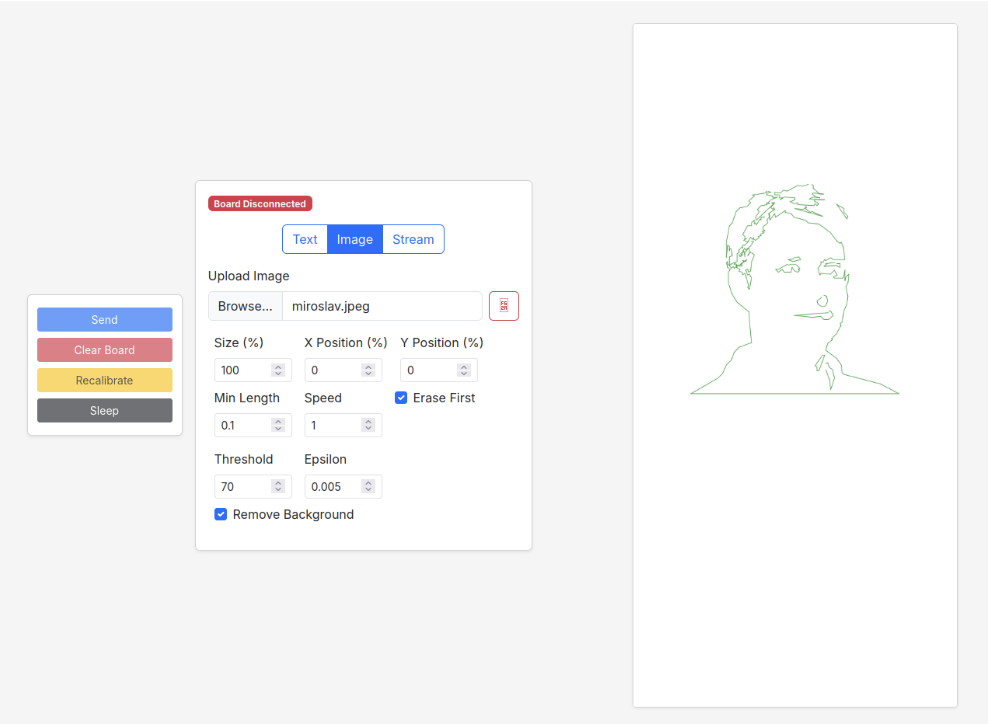
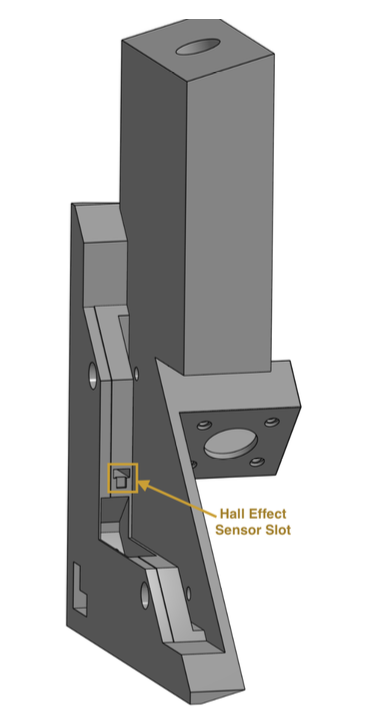
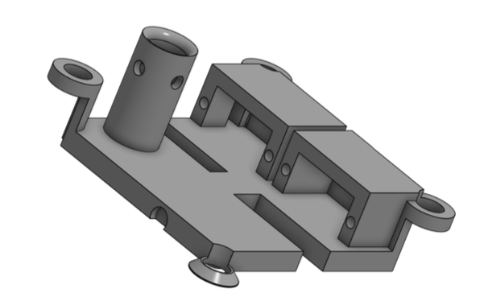
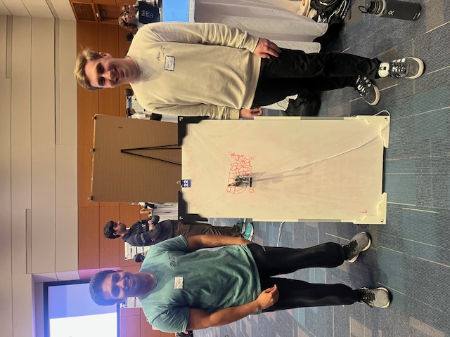
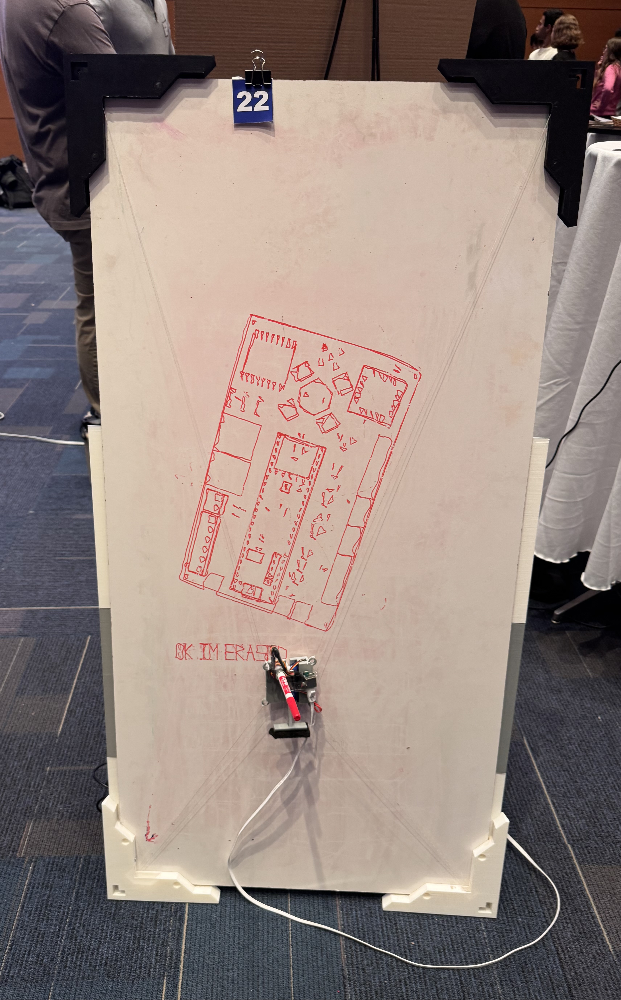

Project Demo
Project met all specifications as shown here and was featured at an engineering design fair. Device was truly impressive in the quality of writing (with the ability to switch between fonts as well) and the speed of drawing.

We took it upon ourselves to improve our whiteboard handwriting, or rather, design something to fix it for us instead. Gantry systems (similar to what 3D printers use) are quite common for this application, but we chose to develop a system functioning via pulleys and strings, which had its challenges but ultimately allowed for huge speed improvements (text writing speeds akin to avg human handwriting and drawing speeds much faster than humans) and allowed us to implement our system on a whiteboard of any size.
Our system should at least approach human writing and drawing speeds on a whiteboard, while being easily distinguishable and neater than human handwriting and drawing.
Board should be able to be erased selectively. Writing and drawing should be repeatable in positioning within 1cm.
System should be usable on whiteboards of any size without and hardware changes or much additional setup.


The design we chose utilized closed loop stepper motors to keep our rotational position for each motor (1 on each corner controlling the length of a thread on a spool; physical design will be described further later) as accurate and repeatable as possible even at high speeds. I was resonsible for the power, communication, synchronization, and motor drive management for the system, so I designed a custom PCB which primarily did the following:

The system would first calibrate in the bottom left corner of the board to determine the length of all strings (this way the system is configurable to any size whiteboard). From there, the ESP32 would wait to receive 'paths' from an external device, giving the system commands indicating what to write/draw or erase. The external device would connect to the ESP32's hosted wifi and be given access to an interface as show here to send commands to the system.


The physical design consisted of 4 corner pieces with mounts for the stepper motors and spools. These spools attach to thin nylon strings that are tied to the 4 corners of the draw unit. The draw unit holdes the marker and a custom eraser that can each be pushed onto the board via the servo motors. The bottom left corner piece has a hall effect sensor embedded in it and the bottom left corner of the draw unit has a small neodynium magnet attached to it, which allows for string length calibration when the draw unit is at the bottom left corner of the board.
Project met all specifications as shown here and was featured at an engineering design fair. Device was truly impressive in the quality of writing (with the ability to switch between fonts as well) and the speed of drawing.



